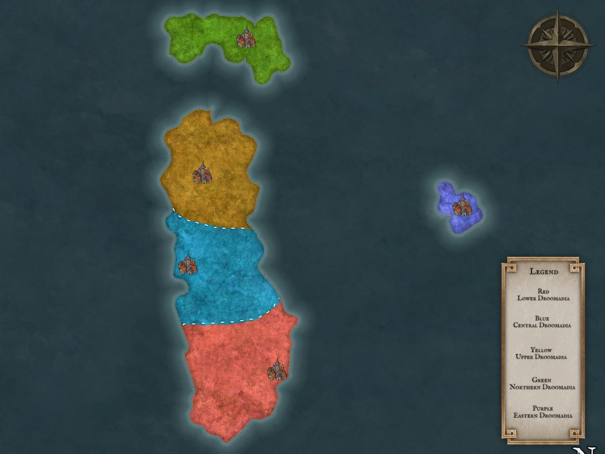
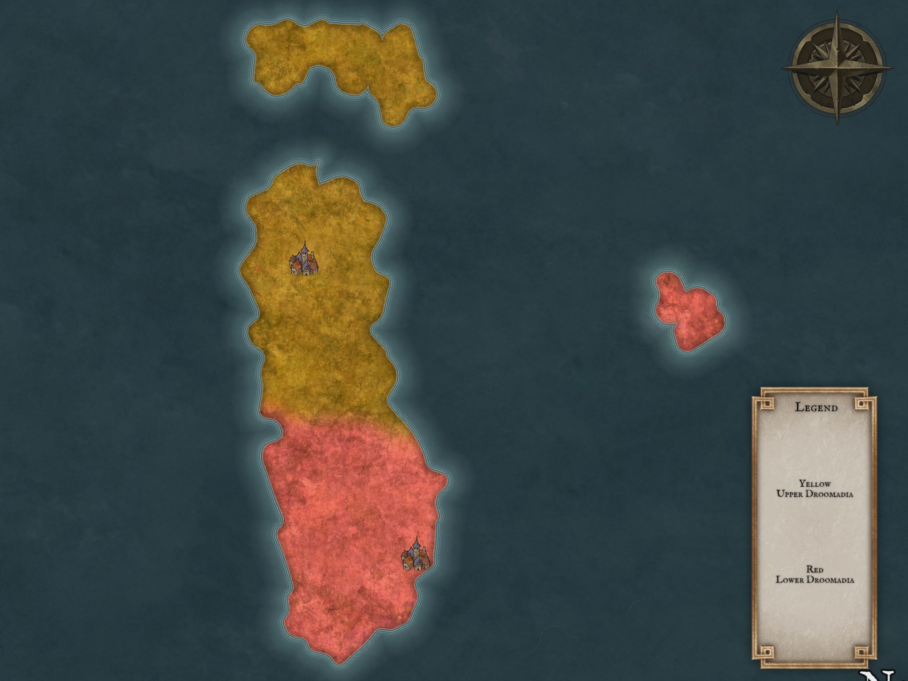

The Kingdom of Droomadia is a region encompassing 3 islands located in the southwestern portion of Araiunus. The nation is seperated from its closest neighbour, the Kingdom of Stithia to the north by the Strait of Harmonia. In terms of total area controlled including sea, Droomadia is the second largest nation, second only to Bruxduvia. As of 1484 PA (Post Ascension), the population of Droomadia was placed at around 3 million. However a full census has not been performed since then so this number is likely innaccurate (see Inundation for more).
The earliest civilisations in Droomadia can be traced back to 1700 BA (Before Ascension), in the north east region. From here, settlers expanded out to the rest of the country, setting up small villages and eventually kingdoms. By 1058 BA, there was a total of 5 kingdoms vying for control over Droomadia: the Claywin Dynasty, the Ambrose Dynasty, the Sinnett Dynasty, the Rothland Dynasty and the Shawcross Dynasty. Each of these kingdoms controlled a region of Droomadia these being in order: Upper Droomadia, Lower Droomadia, Central Droomadia, Northern Droomadia and a small region called Eastern Droomadia (see below).

Over the following 350, these kingdoms would stay relatively unchanged. Small wars would occasionally break out but ultimately would come to nothing but minor territory changes. This changed in 708 when Eastern Droomadia was successfully sieged by the Ambrose Dynasty (Lower Droomadia). The siege resulting in the sacking of the city of Banghral, the execution of the Shawcross Dynasty and the subsequent subjugation of the people who lived there. In the aftermath, this siege was called "The Siege of Sorrow" by the rest of Droomadia. 62 years following the Siege of Sorrow (646 BA), territories would expand again when the Rothland Dynasty (Northern Droomadia) made a surprise push into Upper Droomadia. The Claywin's failed to defend this push as the army was busy repelling a push from Central Droomadia. This attack lead to all but the eradication of the Claywin line, except for one man named Sir Tofrin Claywin who successfully defended a settlement called Dharn Daral from invaders. This victory gave Upper Droomadia the time it needed to refocus and finally repel the attack all the way back to Northern Droomadia. To bring peace, and possibly to save their own skin, the Rothland's offered their daughter Sofia's hand in marraige to Torfin in exchange for peace. He accepted under the condition that upon their marraige, he will claim both Northern and Upper Droomadia. This period was dubbed the Union of War.
This union put mounting pressure on the Sinnett Dynasty to expand their territory from their citizen's who viewed them as weak and ineffective. In 468 BA, a particularly massive drought hit mainland Droomadia. The Claywins and the Ambroses were not as badly affected as they each had territory off the mainland, where they imported large amounts of water and food from. Central Droomadia however had no such saving grace. This along with the already growing distempt for their king resulted in "The Seven Stabbings" during which the commonfolk stormed the castle and murdered 7 members of the Sinnett Dynasty, including both King Fulnir and his son Prince Grynir. Queen Rolina was visiting a friend in the east at the time, and when she heard of the news she reportedly grew inconsolable and locked herself away in a tower. No one met her since, other than the servents who would bring her food. Following the Seven Stabbings, a power vacuum grew in Central Droomadia as rival gangs each tried to claim rightful ownership of the crown. Upper and Lower Droomadia brokered a peace in order to sieze upon this opportunity and began to attack Central Droomadia from both sides. The Central Droomadian Army was in complete disarray following the assassination of their royal family and in 467 BA Central Droomadia fell and was split evenly between the 2 remaining kingdoms. This is how they stayed for the next several hundred years.
Modern Droomadian history begins after these 2 kingdoms rise to power. After the turbulent events of the last several hundred years, neither side wanted more bloodshed. As well as this, both sides royal families are dwarven, who have a long life span. This resulted in nearly 700 years of peace between the Claywins and the Ambroses. During this time, both kingdoms flourished and the respective capital cities of Dharn Daral and Khaldurr grew to be beacons of their times.

However, no good thing lasts forever.? In 376 PA, the threat of the Chalux Empire grew too much for those who sit on thrones. During a diplomatic dinner, war was sparked between Sir Lappir Claywin and Lady Olivick Ambrose. Rumours say that this was sparked by the Chalux Empire, but the validit of such claims is unknown. Regardless, peace was broken and the 2 kingdoms went to war. It lasted for 5 years, during which time both cities were sacked and countless people lost their lives. Finally in 381, The Claywins emerged victorious after they chased the Ambroses into the mountains, and allegedly off a cliff. Chalux however, never attacked Droomadia. According to rumors, a Chalux General took one look at the place and called it "Doomed", which is supposedly where the name Droomadia comes from. Under the rule of Sir Lappir Claywin, and his successors Droomadia thrived. This period of peace was heralded by increased trade negotiations, especially by Sir Obrid Claywin who was the most recent ruler before his untimely death. During his life, he quickly founded and expanded an alliance with City of Scholars and even allowed scholars to test use a small region of southern Droomadia as a testing ground.
The Inundation is the name given to the event that occured in southern Droomadia in 1485, the source of the event itself as well as the Wild and Dead Magic Zones (more on this later) created by this event. Locals use the term interchangably for all 3 items. The Inundation event began in mid 1485, 2 days after the Feast of the Accidental God. The exact cause of the Inundation is unknown, but the leading explanation states that a wizard from the City of Scholars conducted an experiment that created a portal to the Maelstrom, an unstable plane that links the Inner and Outer Spheres.*
Doing so caused powerful unchecked magic to leak through into our own world. The City of Scholars has claimed that the event is of their doing, and has continued to supply aid to Droomadia throughout the crisis.
The Inundation has caused the emergence of unpredictable Wild and Dead Magic Zones to appear sporadically across Droomadia. The 2 Zones are polar opposites, and there are unconfirmed reports that they neutralise each other when they overlap. A Zone can be created anywhere at any time of the year. There has been attempts to study potential patterns in their creation but so far these efforts have failed. The 2 kind of Zones are distinctly different but they operate under the same principle: the flow of magic in these Zones is altered dramatically.
In Wild Magic Zones any and all magical ability is greatly enhanced, to dangerous levels. Any cast of a spell could result in a completely random effect including but not limited to: explosions, conjuration, creating a duplicate, reversing the flow of time, strangulation via plantlife, teleportation, rapid aging and possibly any other effect. The permability of such occurences has no discernable pattern. Dead Magic Zones do the opposite; they remove magic from the area. Attempts to cast spells in such areas will fail, and creatures who rely on magic to sustain themselves will perish immediately.
h
Click here to go back to main page.